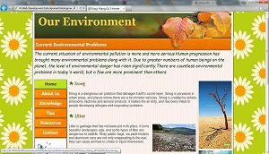
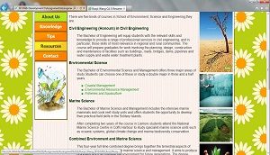
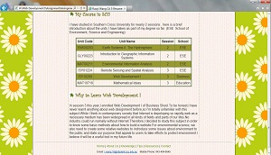
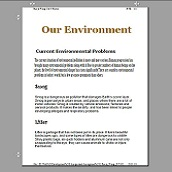

Web Development Skills
Website Design
The latest designment I have been working on was the Website for the first and second assignment that to demonstrate my Web development skills during learning Web Development I in session 3. The topic I set for this Website is environmental conservation as my major is environmental science, I would like to let the visitors learn about the current situation of environmental problems and some tips to protect the earth.
At first I created the concept map and story board to build a general structurefor my Website. The dominant tone of the Website is green and orange in order to hignlignt the green life.Then I applied some elements like image links, navigation buttons, lists and tables to make the page looks vivic and professionally done, and the content are more attractive and understandable. Here are some images of my work.
 Page Header Definitian Lists & Unordered Lists
 Table Print Layout of Homepage
XHTML Form
Building XHTML forms and using JavaScript are also common skills in Web design. Here is a XHTML form I designed by combining these skills for the users of a King's Music Store Website to sign up for an email newsletter from the site.
Web Development Issues
In Web site development, there are a number of issues that have an effect on a Web developer during managing Web projects, such as security, copyright, ethics, privacy. defamation, societal or cultural issues. All of them should be paid attention by Web developers as they could lead to serious consequence. Moreover, the Web pages should be served to the Internet after managed by Web developers, there are some issues with finding a Web host for various client needs. Therefore, I listed about the changes that have made to the Web portfolio, the issues caused I to change it and a brief explanation to support each item, and a short report about the requirements for hosting my portfolio is displayed as a table to present the materials. The Website Issues page can be accessed through the link on the left side.